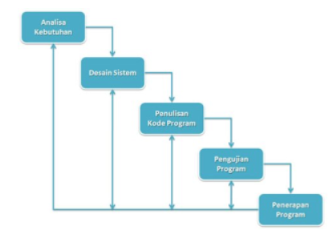

MEKANISME ALUR PERANCANGAN PERANGKAT LUNAK
KOMPETENSI DASAR
Kompetensi Pengetahuan
- Memahami komponen model perangkat lunak
Kompetensi Keterampilan
- Menyajikan komponen model perangkat lunak.
TUJUAN
- Peserta didik mampu menjelaskan konsep ragam model proses permodelan pengembangan perangkat lunak berdasarkan referensi
- Peserta didik mampu menjelaskan kelebihan dan kelemahan masing-masing model perangkat lunak
- Peserta didik mampu membangun hakikat konsep permodelan perangkat lunak berdasarkan referensi
- Peserta didik mampu menyajika penerapan permodelan perangkat lunak
A. Model proses pengembangan
Tahapan proses pengembangan perangkat lunak
Pengembangan perangkat lunak adalah suatu proses dimana kebutuhan pemakai diterjemahkan menjadi produk perangkat lunak.
B. Ragam model proses pengembangan perangkat lunak
Model proses perangkat lunak merupakan cara untuk memproses sebuah perangkat lunak dari nol menjadi sebuah perangkat lunak yang siap untuk digunakan. Berikut merupakan beberapa contoh model proses perangkat lunak yang biasa digunakan :
1. Model Sekuensial Linier atau Waterfall Development Model

Tahapan – tahapan Pengembangan Model Sekuensial Linear / Waterfall Development Model :